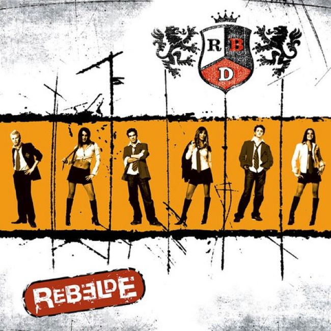

Bem vindos em mais um site criado para sua banda favorita, RBDmaníaco!.
Surgido em 2004 dentro da telenovela Rebelde, o grupo seguiu com sucesso após o fim da trama em 2006.
Entre alguns dos êxitos do grupo estão canções como Rebelde, Solo Quédate En Silencio, Sálvame, Nuestro Amor, No Pares,
Ser o Parecer, Celestial, Bésame Sin Miedo, Tu Amor, Inalcanzable, Empezar Desde Cero, e Para Olvidarte De MÍ. O grupo é
considerado o mais bem-sucedido da história da música pop mexicana por ter conquistado reconhecimento fora da América Latina
(tendo chegado até mesmo à países da Ásia e Europa). Prova disso são os recordes de público em concertos nos Estados Unidos, Brasil,
Eslovênia, Romênia, Espanha, Chile, Equador, entre outros. Fora isso, a marca RBD tem produtos como bonecas, produtos para higiene e alimentos,
além de uma revista editada no México, Romênia, Espanha e Brasil.
Rebelde, novela mexicana produzida pela Televisa, foi um remake da novela argentina Rebelde Way. A trama foi adaptada para o
público mexicano, e foi exibida entre 4 de outubro de 2004 e 2 de Junho de 2006, tendo três temporadas. Os atores que formavam,
na novela, o RBD, Alfonso, Anahí, Christian, Christopher, Dulce e Maite, interpretaram as canções-tema do programa, algo comum no México.
Inclusive, alguns dos membros já vinham de grupos musicais ou carreiras-solo bem sucedidas, como Anahí e Dulce María.

Tipo: CD | Lançamento: 2004

01. Rebelde
02. Sólo Quédate En Silencio
03. Otro Día Que Va
04. Un Poco de Tu Amor
05. Enséñame
06. Tenerte y Quererte
07. Futuro Ex-novio
08. Cuando El Amor Se Acaba
09. Santa No Soy
10. Fuego
11. Sálvame